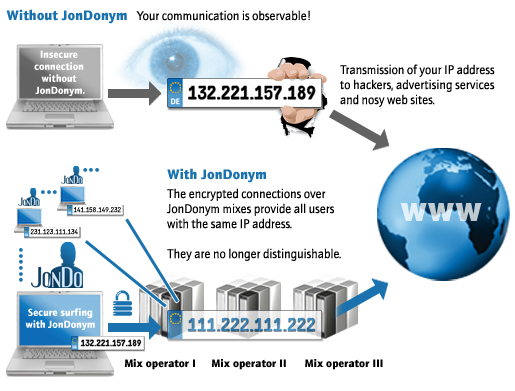

The World Wide Web and your privacy
TOC
The World Wide Web and your privacy
TOC  Introduction Certificates
Introduction Certificates The World Wide Web and your privacy
TOC
Introduction Certificates
The JonDonym/AN.ON technology is based on the principle of multiple encryption, distribution and processing. This procedure does not only protect your internet activities from being observed by third parties (against your access provider, WLAN hackers, advertising services and websites), but also against observation by the individual JonDonym providers themselves (against JonDonym service operators and their billing providers).
The anonymization service JonDonym is a development branch of the AN.ON Project. It consists of multiple user selectable mix cascades. A cascade consists of two or three mix servers operated by independent and non interrelated organizations or private individuals who all publish their identity. The operators have to abide by strict provisions which prohibit saving connection data or exchanging such data with other operators in a cascade. Every connection from a user is differently encrypted for every mix server within a cascade and transferred through the cascade to the target, e.g. a website. Thereby no mix operator alone can by himself expose the user. Eavesdroppers on the connections to JonDonym mixes get garbage data only. Also, since a lot of users surf the anonymization service simultaneously, and thus share the same IP address, all connections of every user are concealed amidst each other: a correlation is not possible any more.

JonDonym has many advantages to other anonymization services:
A similar anonymization can only be offered by the non-commercial software Tor. Internet beginners should be careful with Tor, though: there is no control over who runs the servers in this service over which your data travels. In the past, there has been ongoing suspicion that criminals and intelligence agencies exploit the Tor network in order to secretly attain unencrypted information like passwords, bank accounts and credit cards. Certain tricks can enable the Tor server to concentrate much of the traffic on itself, making the exploit even more effective. Tor may be set as proxy in JonDo though, making surfing considerably slower but, in some individual cases, even more secure than with JonDonym alone because the last servers in this chain will be part of the verified JonDonym network.
Like in Tor, the respective last mix server in a JonDonym cascade could record data which is not separately secured by HTTPS/SSL (has to be offered by the web site itself). Unlike Tor and other services, however, in JonDonym only certified and publicized persons and organizations may operate a mix server. The user may then decide for himself on whether he trusts the operator or not. If needed, they may simply choose other operators. All this makes it highly improbable for criminal operators to infiltrate JonDonym.
The World Wide Web and your privacy
TOC
Introduction Certificates